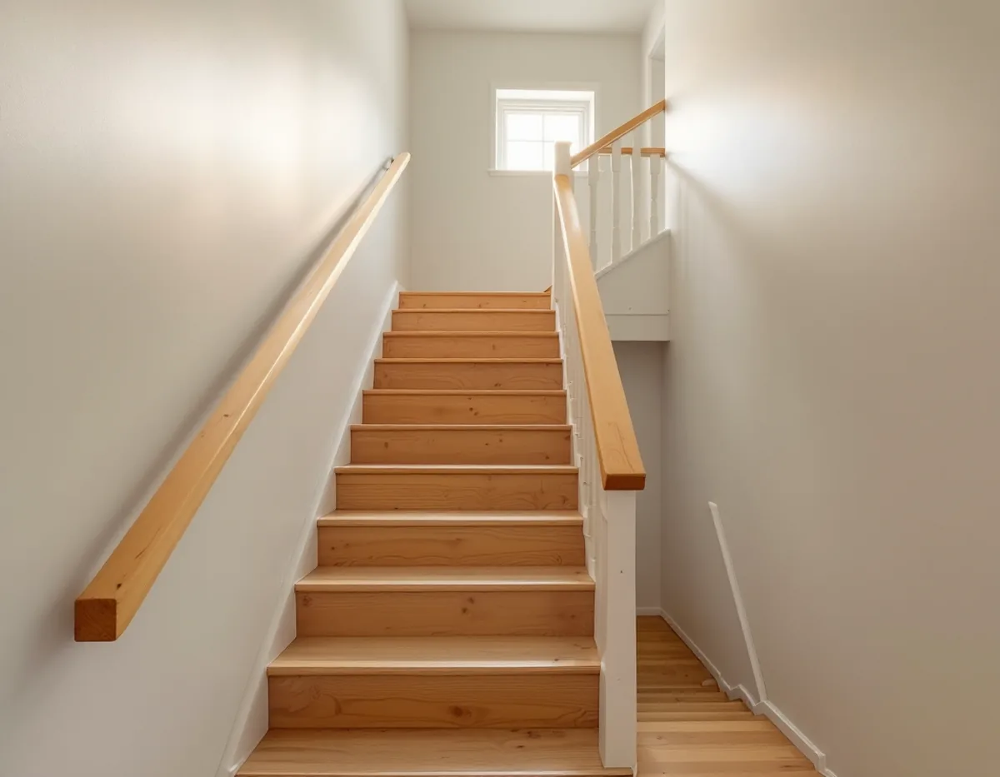
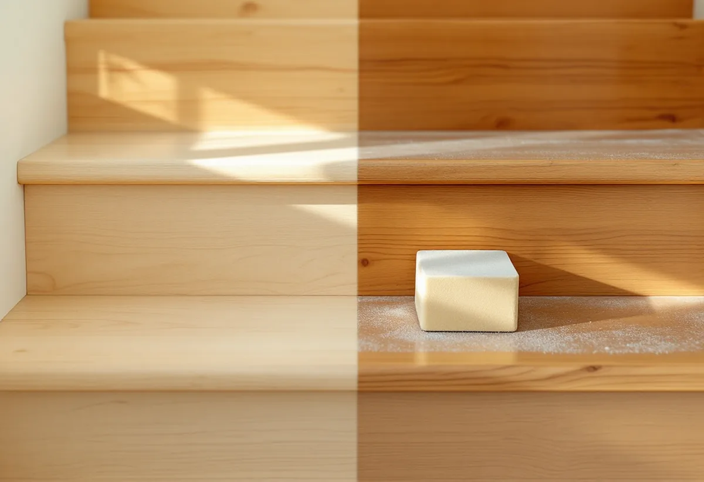

Platsbesök
Vi ser efter vad stegen, räcket och ledstången är gjorda av och behandlade med.
I ett hus i två plan är trappan en yta som både slits och syns, men den går inte att slipa i samma arbetsgång som golven. Stegen slipas ett och ett, räcket har en egen yta och ibland är stegen inte ens av trä. Geal Entreprenad AB slipar golv och trappor i radhus, kedjehus och villor i Järfälla, och vi går igenom trappan för sig innan vi bestämmer behandling.

Kommunens kulturmiljöplan beskriver flera småhusområden i Jakobsberg. Utmed Vretstigen och norra delen av Toppvägen ligger tvåvåningsradhus från början av 1960-talet, byggda av flera olika byggfirmor. Ekedalsområdet började bebyggas 1958 med radhuslängor i två våningar i den låglänta södra delen, och mellan dem och villorna finns ett parti med envåningsradhus med inredd vind och souterrängplan som utnyttjar sluttningen.
Villorna längs Betselvägen från 1950-talet är enligt planen uppförda i två plan, och kedjehusen vid Dressyrvägen från mitten av 1960-talet har en våning med inredd vind. Planen skriver att kedjehusen där är mycket väl bevarade sedan byggnadstiden.
I ett hus i två plan eller med inredd vind behövs en trappa mellan planen, och den kan vara lika gammal som huset.

Svenska Byggnadsvårdsföreningen har svarat på en fråga om ett trappräcke och en ledstång i ett hus från 1969 som såg ut att vara lackad furu, med skavda kanter och gulnat trä. Föreningen kallar det en klurig fråga. Ett sätt är att tvätta av, slipa lätt på de ställen som blivit nötta och bättra där, men det är svårt att behandla resten med något som inte täcker. Vill man demontera räcket och slipa allt kan det krävas mycket slipning, nästan fräsning, för att det inte ska bli flammigt, och träet gulnar igen. Det säkraste resultatet är enligt föreningen en täckmålning eller en lasyr.
Samma fenomen gäller stegen. En obehandlad furutrappa gulnar naturligt, och föreningen skriver att oljning ökar gulningen om oljan inte pigmenteras. Därför bestämmer vi kulören med dig innan vi slipar, inte efteråt.
I ett svar om en ny furutrappa skriver föreningen att linolja fungerar utmärkt som golvolja, att kokt linolja torkar bättre och att överflödet måste torkas bort. Alla ytbehandlingar kräver underhåll, och enklast är kanske att såpskura. Även vangstycken och handledare kan såpbehandlas.
Handledaren ska tåla smutsiga händer. I ett annat svar i föreningens frågespalt rekommenderas fernissa på en handledare av ek, eftersom den blir hård och lätt att torka av, medan vaxer och oljor ofta kräver underhåll. Det är hartserna som gör fernissan stark. Två eller tre lager med mellanslipning ger en yta som håller länge. Om en ledstång i en egnahemsvilla från 1940-talet bedömer föreningen, med viss reservation, att den är av björk, och skriver att oljefernissa eller lack användes för att ledstänger skulle bli avtorkningsbara, ibland efter betsning.
Stegen, räcket och ledstången kan alltså få tre olika behandlingar i samma trappa, och det redovisar vi var för sig.
Alla trappsteg är inte av trä hela vägen. Föreningen beskriver en trappa där de nerslitna stegen hade jämnats ut med en cementliknande pågjutning, troligen magnesit. Materialet är lurigt eftersom asbestfiber ganska ofta användes som armering i de tunna pågjutningarna, så man bör veta vad det är innan man slipar eller river. Har ytan inga sprickor eller lösa bitar kan den med fördel ligga kvar. Ska den slipas krävs rätt skyddsutrustning och utsug.
Boverket listar golvmassor bland de material där asbest kan finnas och skriver att det är sannolikt att det finns asbest någonstans i en byggnad från 1940–1980, men att den även kan finnas i äldre byggnader. Provtagning och analys är det enda säkra sättet att veta. Om asbest saneras i samband med ett byggarbete räknar Skatteverket det som rotarbete.
Har stegen en järnskoning i framkanten brukar det enligt föreningen vara bäst att låta den sitta kvar. Färg på järnet kan tas bort med grönsåpa som får verka under plast något dygn, och linolja i en trasa ger en jämn yta och skyddar mot rost. Om golven i övrigt ska bytas, eller om gamla mattor ska bort, finns det mer under golvläggare i Järfälla.
Vi ser efter vad stegen, räcket och ledstången är gjorda av och behandlade med.
Finns gjutna steg föreslår vi prov innan något slipas, särskilt i hus från 1940–1980.
Steg, räcke och ledstång står som egna poster.
Golven runt trappan täcks, och järnskoningar lämnas på plats.
Stegen slipas ett och ett, och räcket slipas lätt där det är nött.
Såpa, olja eller fernissa läggs på enligt det vi har kommit överens om.
Skatteverket räknar slipning av golv som rotarbete i ett småhus som används som bostad. Vilka delar av arbetet med trappan som räknas som rotarbete redovisar vi i kostnadsförslaget.
Avdraget är 30 procent av arbetskostnaden, högst 50 000 kr per person och år och högst 75 000 kr tillsammans med rutavdrag. Material och resor ger inget avdrag. Geal drar avdraget direkt på fakturan.
Antalet steg, om räcke och ledstång ska behandlas, om gjutna steg behöver provtas och vilken behandling du väljer. Efter ett gratis platsbesök får du ett skriftligt kostnadsförslag.
Parkett, trägolv, klinker och slipning.
Golvläggning i Stockholm →Takbyte, takbesiktning och plåtarbeten.
Takläggare i Järfälla →Jakobsberg, Viksjö och Kallhäll.
Takrenovering i Järfälla →Planbesked, extra bostad och ansvar.
Byggföretag i Järfälla →Underhållsmålning i rätt tid.
Fasadmålning i Järfälla →Kedjehus, sekelskiftesvillor och parstuga i Stäket.
Fasadrenovering i Järfälla →Bruksvillor, radhus och 70-talsfönster i Järfälla.
Fönsterbyte i Järfälla →Bottenstycken, bleck och vita omfattningar.
Fönsterrenovering i Järfälla →Kedjehus, egnahem och gamla golvskikt.
Golvläggare i Järfälla →Radhus, kedjehus och souterränghus.
Badrumsrenovering i Järfälla →Kedjehus, radhus och souterräng.
Köksrenovering i Järfälla →Putsade radhus, kedjehus och villor i Järfälla.
Målare i Järfälla →Stuprör, skärmtak och plåttak i Järfälla.
Plåtslagare i Järfälla →Förgårdar, förråd och ytterdörrar.
Snickare i Järfälla →Lovfritt takbyte och papperen du sparar.
Takbyte i Järfälla →Ny tapet på skivväggar i radhus.
Tapetsering i Järfälla →